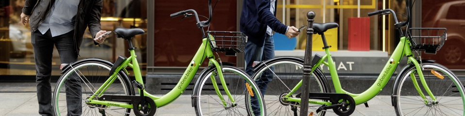
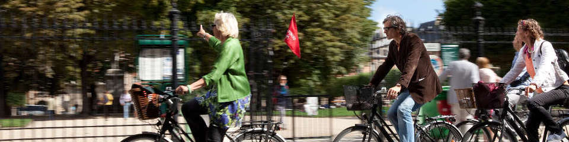

Louer un vélo pour vous déplacer rapidement dans Paris !

Regardez la station la plus proche de votre position sur la map. Cliquez sur la station, vous aurez son adresse, et le nombre de vélos disponibles.

Il ne vous reste plus qu'à réserver le vélo grâce au formulaire puis à aller le chercher dans les 20 minutes qui suivent. Si vous dépassez ce temps, il faudra refaire une réservation du vélo.Maintenant vous pouvez profiter d'une belle balade sous un soleil radieux.Pour terminer, déposez le vélo dans une station où des places sont disponibles.Louer un vélo pour vous déplacer rapidement dans Paris !